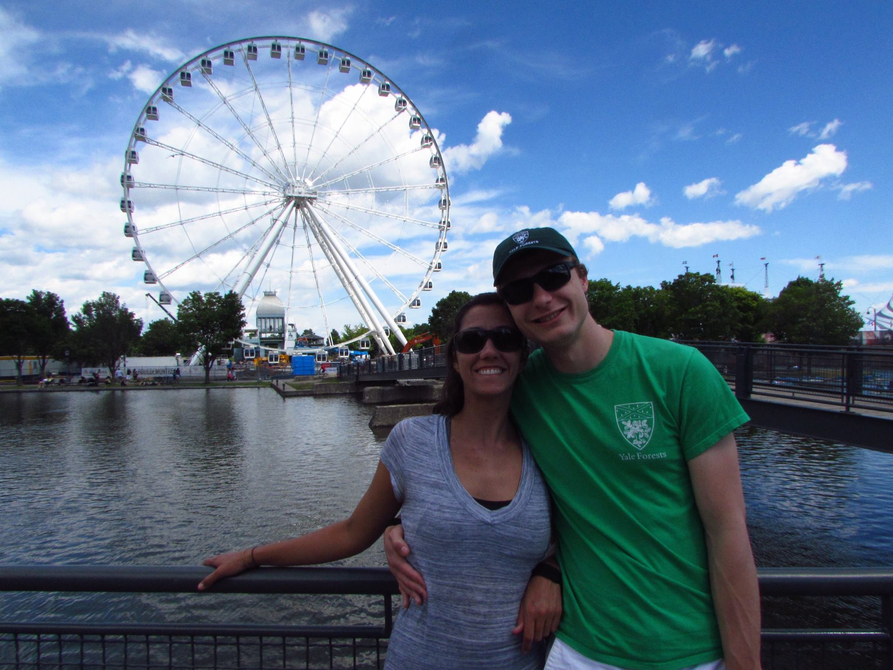

About Me
My academic accomplishments are listed in my CV: Curriculum vitae
Education
- PhD Yale School of Foresty & Environmental Studies 2014-present
- MESc Yale School of Foresty & Environmental Studies 2012-2014
- BSc Lakehead University 2008-2012


Growing up
I was born and raised in Peterborough, Ontario, which is a small city in the beautiful Kawartha Lakes region nestled between Toronto and Ottawa. I grew up on a farm and spent my childhood tromping around the fields and forests of my rural home. I spent my high school years on a mixture of the arts and natural sciences, but decided to pursue an undergraduate degree in biology after competing in Ontario Envirothon and Canada Wide Science Fair. I studied at Lakehead University in Thunder Bay, Ontario and returned to Peterborough during the summers to work on stream nitrogen cycling and nanoparticle contamination with Maggie Xenopoulos. I was introduced to population and community ecology in my last two years of university when working with Doug Morris studying rodent populations in Thunder Bay, Onatio and Nunavut. Doug's use of mathematical theory to understand and explain ecological and evolutionary patterns has a huge influence on me.
Graduate Work
After graduating from Lakehead University, I moved to New Haven Connecitcut to work with Os Schmitz. Os helped me combine my interests in nitrogen cycling and community ecology to study how animals alter nutrient movement through ecosystems. I became very interested in using mathematical models to predict how and why organisms cycle carbon and nitrogen. I also noticed that most of the work studying how aboveground animals impacted nitrogen cycling could only explain part of the nitrogen cycle and started looking at the soil organisms at our field sites in Northeastern Connecticut. I decided to study how these two groups of organisms--herbivores and decomposers--interacted through nutrient cycling and how they influence plants, microbes, and the whole ecosystem.
These days
Throughout my PhD I have worked primarily at Yale-Myers Forest in North-eastern Connecticut, but I also have field sites in New Haven and occassionally visit sites throughout New England. When I am not busy with ecology, I spend time with my wife, Desirée Lopes, traveling to visit beautiful places, family, and friends in New England and in our home countries of Canada and Brazil.
